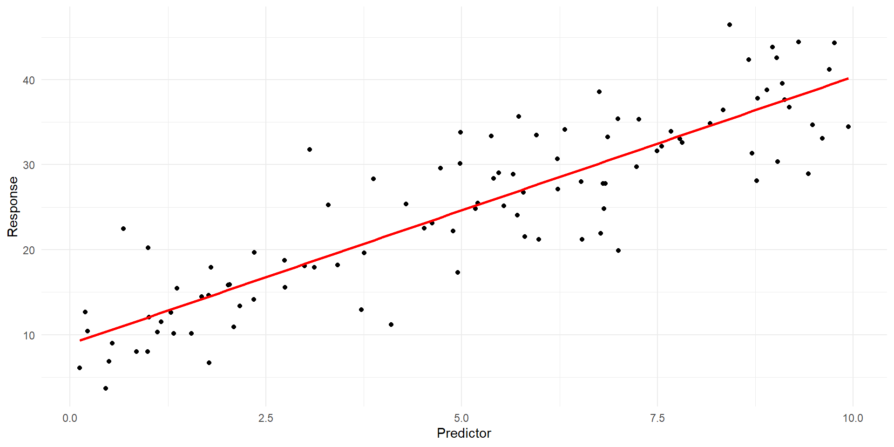
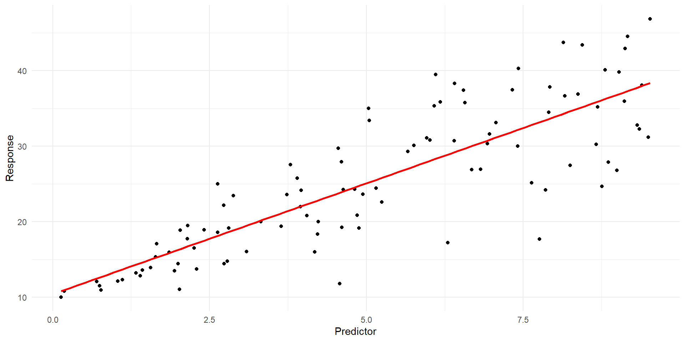

ST303 - Linear Models
In previous lectures, we considered the assumptions underlying ordinary least squares regression and how to assess them using diagnostic plots.
One important assumption is that the errors have constant variance.
But what happens when this assumption is violated?
We will introduce weighted least squares
An alternative estimation method that allows observations to have different error variances.
\[ \mathbf{Y}=\mathbf{X}\boldsymbol{\beta} +\boldsymbol{\varepsilon} \]
One of the standard assumptions of linear regression is that the errors have constant variance:
\[ \boxed{\operatorname{Var}(\epsilon_i)=\sigma^2} \]
This assumption is called homoscedasticity
In other words, the variability around the regression mean is assumed to be the same for all observations.
Imagine fitting a regression model to predict household expenditure from household income.
Under homoscedasticity, we assume that the variability in expenditure around the regression line is approximately the same for low-income and high-income households.
\[ E(Y_i\mid X_i) = \beta_0+\beta_1X_i \]
The variance around this line remains constant as income changes

Now suppose that the variability around the regression line changes with the predictor.
This is called heteroscedasticity
\[ \boxed{\operatorname{Var}(\epsilon_i)=\sigma^2} \]
\[ \boxed{\operatorname{Var}(\epsilon_i)=\sigma_i^2} \]

A common way to identify heteroscedasticity is through a residual-versus-fitted plot.
Under constant variance, we expect the residuals to have approximately equal vertical spread across the range of fitted values.
Under heteroscedasticity, the spread may increase or decrease.
Common patterns include:
The important feature is that the variance changes systematically.
Heteroscedasticity is common in real-world data.
For example:
The key idea is that some observations may be measured or predicted more precisely than others
OLS estimates the regression coefficients by minimising the residual sum of squares:
\[ \operatorname{SSE} =\sum_{i=1}^{n}(y_i-\widehat y_i)^2 \]
Every squared residual contributes equally to this criterion
However, if some observations have much greater variability than others, treating every observation equally may not be the most efficient approach.
Under the standard linear model assumptions, OLS is the best linear unbiased estimator.
When the error variances differ, OLS is generally no longer the most efficient linear unbiased estimator.
Furthermore, the usual OLS standard errors may be incorrect
This can affect:
There are several possible approaches.
In this lecture, we focus on weighted least squares
\[ \operatorname{SSE}= \sum_{i=1}^{n} (y_i-\mathbf{x}_i^T\boldsymbol{\beta})^2 \]
\[ \operatorname{WSS} = \sum_{i=1}^{n} w_i(y_i-\mathbf{x}_i^T\boldsymbol{\beta})^2 \]
where \(w_i\) is the weight assigned to observation \(i\)
The weights determine how much each observation contributes to the estimation of the regression coefficients.
The choice of weights is important.
Suppose two observations have the same residual:
\[ e_1=5,\qquad e_2=5 \]
However, suppose the first observation is measured much more precisely than the second
It may be more appropriate to penalise the residual for the second observation more heavily
\[ w_1=4,\qquad w_2=0.25 \]
Their contributions to the weighted sum of squares are:
\[ w_1 \; e_1^2=4(25)=100 \]
\[ w_2 \; e_2^2=0.25(25)=6.25 \]
The first observation contributes much more to the fitting criterion
This is because it has been assigned a higher weight
In weighted least squares, weights are typically chosen to be inversely proportional to the error variance:
\[ \boxed{w_i\propto\frac{1}{\sigma_i^2}} \]
Therefore:
In other words, observations that provide more precise information about the regression relationship receive greater weight.
This is the central idea behind weighted least squares.
Consider a regression model for household consumption \(Y\) and household income \(X\)
\[ Y_i = \beta_0 + \beta_1X_i + \varepsilon_i \]
Imagine two households
The variability of consumption may therefore increase with income.
A weighted least squares model could account for this by assigning lower weights to observations with greater error variance.
Suppose the regression errors are independent but do not have constant variance.
Instead, we will assume:
\[ \operatorname{Var}(\epsilon_i) =\frac{\sigma^2}{w_i} \]
where \(w_i > 0\) is known.
The weights describe the relative precision of the observations.
A larger \(w_i\) corresponds to a smaller error variance.
Starting with:
\[ Y_i = \mathbf{x}_i^T \boldsymbol{\beta} + \varepsilon_i \quad \longrightarrow \quad \text{multiple by } \sqrt{w_i} \quad \longrightarrow \quad \sqrt{w_i}Y_i = \sqrt{w_i}\mathbf{x}_i^T\boldsymbol{\beta} + \sqrt{w_i}\varepsilon_i \]
The transformed error has variance:
\[ \begin{aligned} \operatorname{Var}(\sqrt{w_i}\varepsilon_i) &=w_i\operatorname{Var}(\varepsilon_i)\\ &=w_i\frac{\sigma^2}{w_i}\\ &=\sigma^2 \end{aligned} \]
Therefore, the transformed errors have constant variance
We transform the model so that the errors have a common variance
Since the transformed errors have common variance, we can apply ordinary least squares to the transformed model.
The resulting criterion is:
\[ \boxed{\sum_{i=1}^{n} w_i(y_i-\mathbf{x}_i^T\boldsymbol{\beta})^2} \]
Thus, weighted least squares estimates the coefficients by minimising the weighted residual sum of squares.
Notice that the weights are applied to the squared residuals.
They are not simply multiplied by the observed response values.
In matrix notation, we can define the diagonal weight matrix as:
\[ \mathbf{W} = \begin{pmatrix} w_1 & 0 & \cdots & 0\\ 0 & w_2 & \cdots & 0\\ \vdots & \vdots & \ddots & \vdots\\ 0 & 0 & \cdots & w_n \end{pmatrix} \]
\[ \boxed{ \widehat{\boldsymbol{\beta}} = (\mathbf{X}^T\mathbf{X})^{-1} \mathbf{X}^T\mathbf{Y} } \]
\[ \boxed{ \widehat{\boldsymbol{\beta}}_w = (\mathbf{X}^T {\color{blue}{\mathbf{W}}} \mathbf{X})^{-1} \mathbf{X}^T {\color{blue}{\mathbf{W}}} \mathbf{Y} } \]
In some situations, the error variances are known or can be calculated from the study design.
For example:
However, in many applications, the variances are unknown.
We then need to estimate the variance structure from the data.
Suppose diagnostic plots suggest that the error variance increases with a predictor \(X_j\)
\[ \begin{aligned} \operatorname{Var}(\epsilon_i) &= k \; X_{ij} \\[8pt] w_i &\propto \frac{1}{kX_{ij}} \\[8pt] w_i &= \frac{1}{X_{ij}} \end{aligned} \]
\[ \begin{aligned} \operatorname{Var}(\epsilon_i) &= kX_{ij}^2 \\[8pt] w_i &\propto \frac{1}{kX^2_{ij}} \\[8pt] w_i &= \frac{1}{X_{ij}^2} \end{aligned} \]
The weights should be based on the assumed variance structure
What if we do not know the variance function?
One approach is to estimate it from the residuals.
\[ w_i=\frac{1}{\widehat{\sigma}_i^2} \]
We call this an estimated-weight approach because the weights are obtained from the data rather than known in advance.
Suppose a residual plot shows increasing variability as the fitted values increase.
We can use the absolute residuals as a rough measure of the changing spread
\[ |e_i| \approx \sigma_i \]
We can regress the absolute residuals on the fitted values or a relevant predictor.
The fitted values from this auxiliary regression provide estimates of the standard deviation: \(\hat{\sigma_i}\)
\[ \boxed{w_i=\frac{1}{\widehat{\sigma}_i^2}} \]
The two-stage approach can be repeated
This is called iteratively reweighted least squares.
The process can be repeated until the estimates or weights change very little.